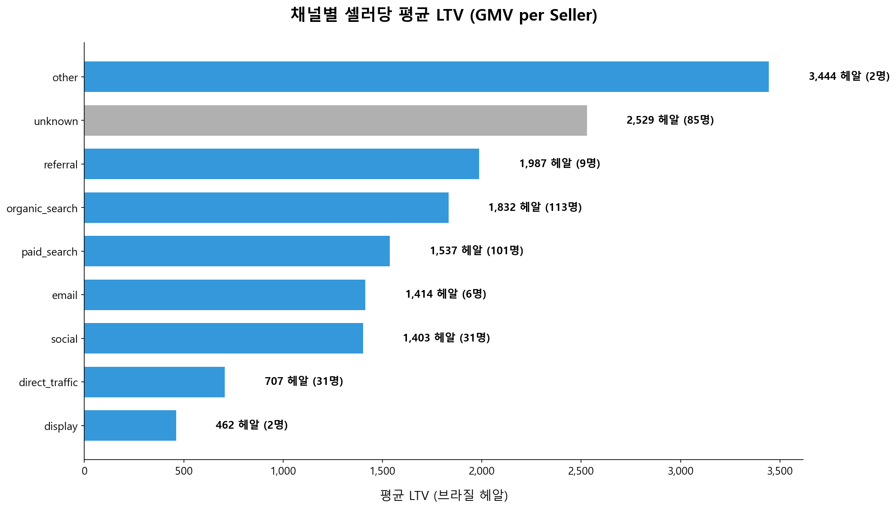
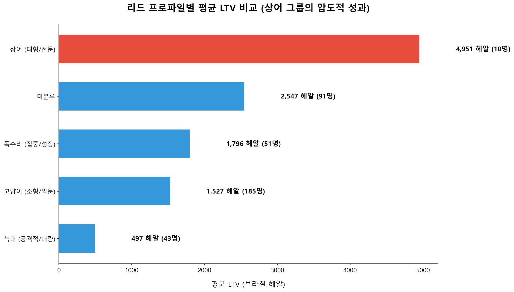
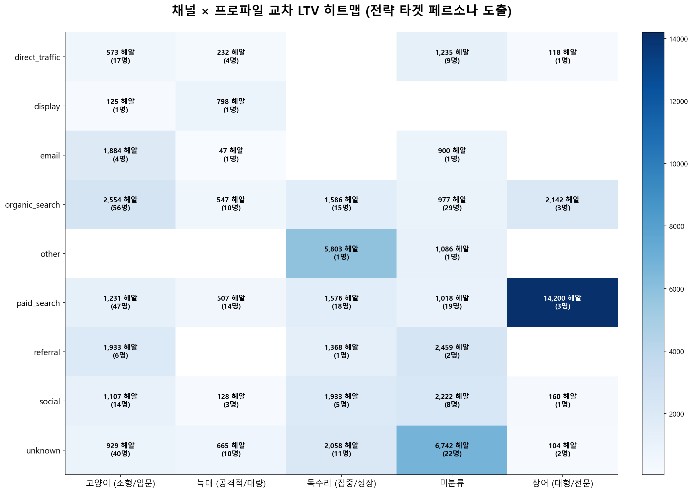
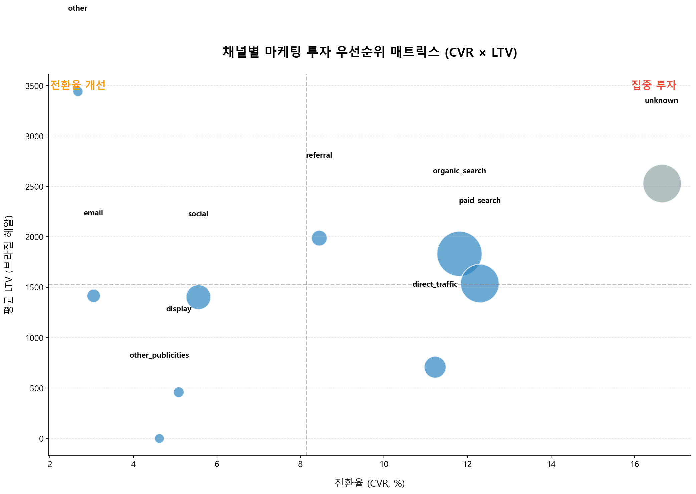
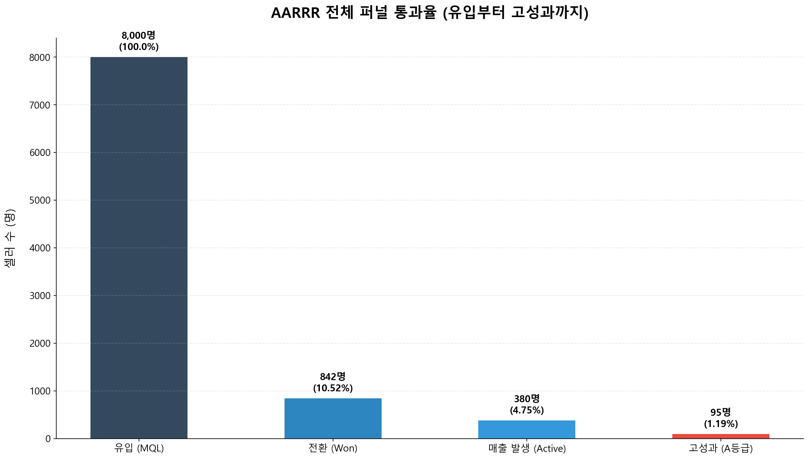

Revenue Part Strategic Report | 2026.04.14
* 본 리포트는 브라질 현지 통화인 헤알(Real, R$)을 기준으로 작성되었습니다.
Olist는 셀러의 운영 특성과 규모에 따라 4가지 동물군으로 분류하여 관리합니다.
대규모 재고를 보유하고 디지털 숙련도가 높은 전문 기업형 셀러입니다. 플랫폼의 매출 성장을 견인하는 핵심 동력(ICP)입니다.
공격적인 마진 정책과 대량 판매를 지향하는 중대형 셀러입니다. 시장 점유율 확보에 중요한 역할을 수행합니다.
특정 카테고리에 집중하며 빠르게 성장하는 중형 셀러입니다. 틈새 시장 공략에 강점이 있습니다.
소규모 또는 개인 셀러로, 입문 단계의 판매자입니다. 운영 리소스는 낮으나 유입량(Volume)을 지탱합니다.
'unknown' 채널이 매출 1위이나 추적 인프라 보완이 시급합니다. 식별된 유료 채널 중 성과 1위는 'social'로 나타났습니다.
'상어' 프로파일과 'online_big' 유형의 조합이 일반 셀러 대비 3.5배 이상의 LTV를 창출하는 최고 가치 타겟입니다.
단순 전환율보다 최종 A등급 도달률(Quality)이 높은 Organic 및 Social 채널에 마케팅 역량을 집중해야 합니다.
누가 플랫폼에 가장 높은 장기 매출을 만드는가?

unknown 채널이 독보적 1위이나, 실질적 추적 가능 채널 중에서는 social이 가장 우수한 가치를 창출합니다.
LTV가 낮은 referral 채널은 단순히 볼륨을 채우는 용도이며, 고가치 셀러 유입 능력은 비교적 낮습니다.
셀러의 성향(Behaviour Profile)이 매출에 미치는 영향

'상어 (대형/전문)' 그룹 셀러는 고양이 그룹 대비 평균 3배 이상의 누적 매출을 기록합니다.
전환 초기부터 상어의 특징(대규모 재고, 디지털 숙련도)을 보이는 리드를 최우선적으로 리소스에 배정해야 합니다.
어떤 경로를 통해 어떤 사냥꾼(Hunter)이 들어오는가?

Organic Search를 통해 유입된 상어 전문 셀러가 현재 가장 수익성이 높은 조합입니다.
복합적인 특징을 가진 셀러들은 주된 특성(Primary Profile)을 기준으로 분류하여 타겟 마케팅을 정교화할 수 있습니다.
데이터 기반의 마켓 리소스 배분 전략 (2×2 Matrix)

유입 가치와 전환율이 모두 보장되는 채널에 예산을 수혈하여 시장 점유율을 확장해야 합니다.
평균 LTV가 높은 채널에서 유입되는 리드는 반드시 전문 상담 신청 등 고도화된 영업 클로징을 지원해야 합니다.
MQL 유입부터 최종 A등급 셀러 탄생까지의 생온 여정

전체 리드 중 상위 0.4%만이 최종 A등급에 도달합니다. 양보다 질적인 성장을 위해 고가치 리드 감별이 필수적입니다.
유입(MQL) 대비 매출 발생(Active)까지의 전환 과정에서 발생하는 유실을 최소화하는 전략이 요구됩니다.